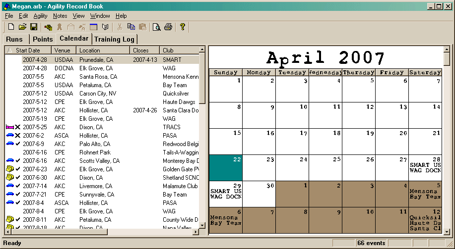

The Calendar tab is made up of two main windows. The view on the left is known as the Calendar List, the one on the right is the Calendar. (The right-side Calendar view will resize itself to fit the view.)

When you select an entry in the list, the day of the trial will be highlighted in the right side. The view that currently has focus will have the selected item drawn more visibly (in the above picture, the left view has focus).
If you right-click on an item (or press the "Window Menu" key on the keyboard), a context menu will appear allowing you to perform a number of actions.
Also, double-clicking on an item (in either window), will bring up a dialog (the Properties item in the context menu will do the same thing).